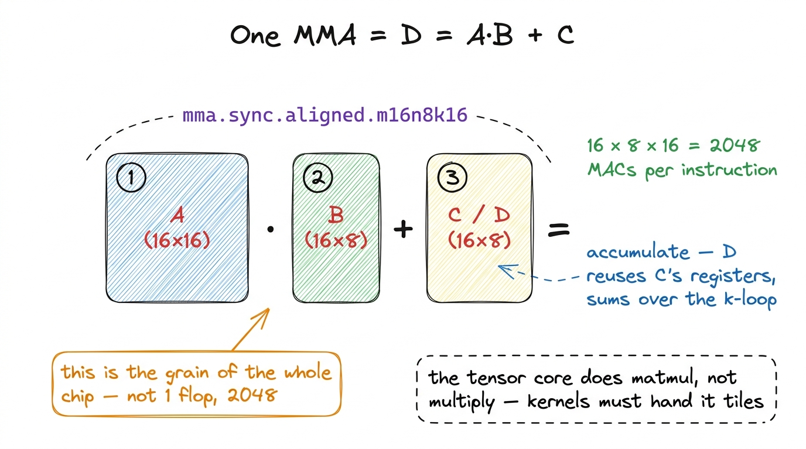
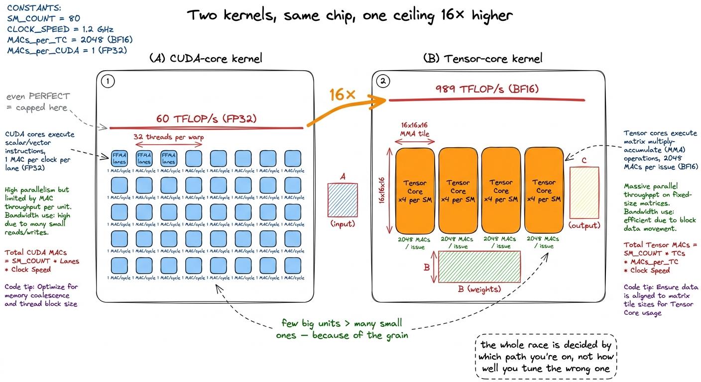
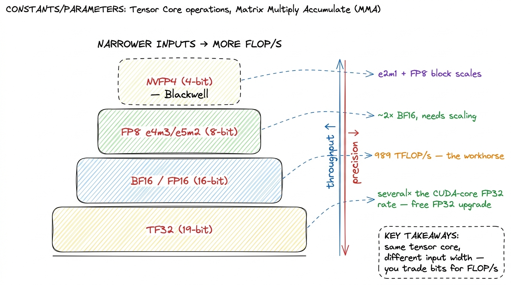
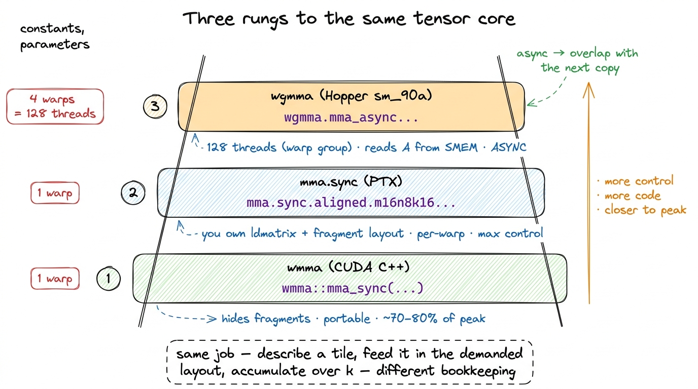
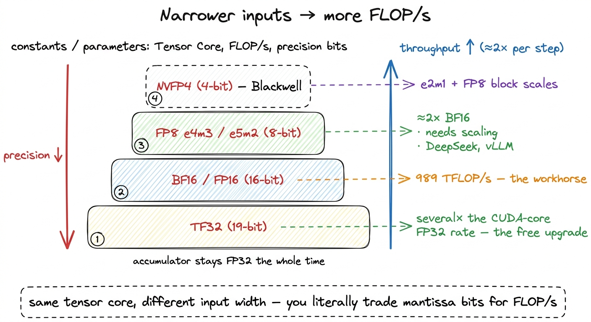
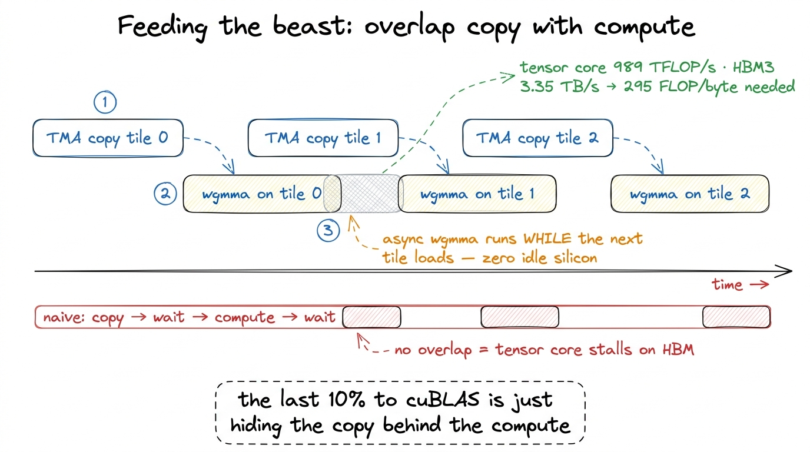

Tensor cores TC
When you read the spec sheet for an H100 and it says 989 TFLOP/s of BF16, it is natural to picture that number spread thinly across the whole chip — thousands of little cores, each one chipping in its share. That picture is wrong, and getting it right is the whole point of this article. The overwhelming majority of that headline throughput — call it 95% — comes from one small, specialized, oddly-shaped unit that does exactly one thing. Everything else on the chip exists to keep that unit fed.
That unit is the Tensor Core. And the question this article answers is a simple one that turns out to reorganize everything you thought you knew about GPU kernels:
If the tensor core is where almost all the FLOPs live, and it only knows how to multiply tiny matrices — then what does a fast kernel actually have to do to keep it busy?
Let me build the answer from the ground up. I will assume you know almost nothing about tensor cores specifically, though it helps if you have seen a plain scalar d = a*b + c before. We will start from that one line of arithmetic, blow it up one dimension, and watch the entire strange shape of a modern matmul kernel fall out of it — the fragments, the ldmatrix, the warp-group instructions, the software pipelining, all of it. By the end you should be able to look at a cuBLAS-beating kernel and understand why it is shaped the way it is, instead of just staring at the syntax.
This is the last stop on the hardware tour before we start climbing the GEMM ladder. So let's make the tensor core concrete: what it computes, in what shapes, at what precision, and why that shape dictates the structure of every good matmul on the planet.
Start from one number: the scalar FMA
Here is the most basic arithmetic primitive a GPU has. A CUDA Core — the ordinary lane inside a streaming multiprocessor — does a scalar fused multiply-add (FMA):
d = a * b + cOne number in each slot, one number out, done in a single instruction. The whole first half of this course is built on this primitive. When you write a naive matmul, each output element C[i][j] is a sum Σ A[i][k] * B[k][j], and every term in that sum is one scalar FMA. The GPU issues these by the billion, one lane at a time.
Now ask the obvious question. A big GEMM — say 4096 × 4096 × 4096 — needs about 2 × 4096³ ≈ 1.4 × 10¹¹ floating-point operations. If each FMA is two flops (one multiply, one add), that is roughly 6.9 × 10¹⁰ FMAs. At one FMA per lane per cycle, even with all ~16,000 FP32 lanes on an H100 firing perfectly, you are shoveling scalars one at a time. It works, but the grain is tiny: the machine's smallest unit of work is a single multiply-add.
The tensor core's whole idea is to make that grain enormous.
Blow it up one dimension: D = A·B + C
A tensor core does the exact same operation — a fused multiply-add — but one dimension up. Instead of scalars, the operands are small matrices:
D = A · B + Cwhere A, B, C, and D are little matrix tiles. This is a Matrix Multiply-Accumulate, or MMA. And I want to slow down on the "+ C" part, because it is not decorative — it is the entire reason the instruction is designed this way.
A single MMA does not compute a whole output tile of your big matmul. It computes a slice — one k-chunk's worth — and adds it onto a running total that lives in registers. So a fast kernel issues a whole sequence of MMAs, marching along the k dimension of the GEMM, each one folding another slice into the same accumulator C. That is why, in almost every real kernel, the C in D = A·B + C is literally the same registers as D: you accumulate in place, over and over, until the k-loop is done.1 The general library form is D = αA·B + βC, with scalars α and β so a GEMM can scale and blend. But inside the hot inner loop, α and β are just 1, and the fragment simply keeps summing. The "+ C" you see in the silicon is the running accumulator, not the epilogue scale.
Let's put the smallest possible concrete example on the table. The canonical Hopper/Ampere MMA shape is written m16n8k16. That means: A is 16 × 16, B is 16 × 8, and the accumulator C/D is 16 × 8. How many multiply-accumulates does one such instruction do? Every element of the 16 × 8 output is a dot product of length k = 16, and there are 16 × 8 = 128 output elements. So:
16 × 8 × 16 = 2,048 multiply-accumulate operations, in one instruction.
That is the grain of the modern chip. Not one flop — 2,048 of them, issued as a single op. Hold onto that number; we are going to use it repeatedly.

figure rendering · A single MMA multiplies two small tiles and accumulates into a third.The exact legal shapes are baked into the silicon and depend on precision. You will also meet m16n8k8 (half the k, so 16 × 8 × 8 = 1,024 MACs) and the older Volta wmma shapes like m16n16k16.2 nvcc rejects an illegal shape/precision combination at PTX-assembly time, not at runtime — so you find out immediately, which is merciful. The set of legal m×n×k tuples is a lookup table in the PTX ISA docs; it is small, and different for f16, bf16, tf32, and fp8 inputs. But the mental model never changes: one MMA multiplies two small tiles and accumulates into a third.
Why ~95% of the FLOPs live in this one unit
Now for the surprising part. How many tensor cores does an H100 actually have?
Four per SM. One per warp scheduler. With about 132 SMs on the die, that is a little over five hundred tensor cores on the whole chip. Compare that to the roughly 16,000 FP32 CUDA-core lanes. The tensor cores are few, and physically they are big — "much larger and less numerous than CUDA Cores," which is the exact opposite of the many-tiny-cores picture most people carry in their head.
So how can five hundred big units out-throughput sixteen thousand small ones by two orders of magnitude? Because of that 2,048 number. A CUDA core retires one MAC per lane per cycle. A tensor core retires thousands per issue. NVIDIA quotes the tensor cores at roughly "100× more floating-point operations per second than CUDA Cores," and that entire gap comes from doing a whole matrix per instruction instead of a whole scalar.
Let me make the ceiling painfully concrete, because this is the fact that governs the rest of the course. The H100's FP32 CUDA-core throughput is about 60 TFLOP/s. Its BF16 tensor-core throughput is 989 TFLOP/s. That is a 16× gap on the same chip.
So picture two kernels. Kernel A never touches a tensor core — it does everything with scalar FFMA. Even in a perfect universe — flawless coalescing, full occupancy, zero memory stalls — Kernel A caps out near 60 TFLOP/s, because that is the CUDA-core ceiling and there is no way around it. Kernel B is on the tensor-core path and its ceiling is 989. This is why, in beating cuBLAS on H100, our best hand-written scalar kernel stalls at 93.7% of cuBLAS and simply cannot go further: cuBLAS is on the tensor-core path and we are not. We are not losing by 6% of effort; we are losing by 16× of hardware.

figure rendering · Same silicon. The scalar kernel's ceiling is 60 TFLOP/s; the tensor-coFrom the three regimes view, the tensor core is precisely what makes a big GEMM compute-bound in the first place. It raises the arithmetic ceiling so absurdly high that the memory system becomes the enemy you actually have to fight. Keep that inversion in mind: the tensor core doesn't make the math the hard part. It makes the math trivial and turns feeding it into the hard part.
The catch that reshapes your code: fragments
Here is where writing tensor-core kernels stops resembling anything you have done before. Let me pose the question the way it hit me the first time: I have a 16×16 tile of A sitting in shared memory. Which thread holds it? How do I hand it to the tensor core?
The answer is disorienting. No single thread holds the tile. An MMA is not a thread-level instruction — it is a warp-level one. All 32 threads of the warp must execute the MMA together, in lockstep. That is what the sync in mma.sync literally means: the whole warp arrives, or the behavior is undefined. If 31 threads show up, you do not get a slightly-wrong answer; you get garbage.
And the operands are smeared across the warp. That 16 × 16 tile of A is not held by thread 0; it is distributed a few elements at a time across all 32 threads, in a specific, non-obvious layout the hardware demands. These per-thread slices are called fragments. Each thread holds a handful of A elements in its private registers, a handful of B, and a handful of the C/D accumulator. When the MMA fires, the tensor core reads all 32 threads' registers at once, does the matrix multiply, and writes the accumulator fragments back into those same registers.
Let's do the by-hand math, because it demystifies the whole thing. One m16n8k16 MMA does 2,048 MACs, spread over 32 threads. So each thread contributes:
2,048 / 32 = 64 MACs per thread, per instruction.
And you can see the layout concretely. For the simpler m16n8k8 shape (a real one from the fast-matmul writeups), the A fragment is 16 × 8 = 128 elements over 32 threads — so 128 / 32 = 4 A elements per thread — and the elements are assigned in a fixed pattern like thread 0 owns {a0, a1} of row 0 and the matching pair two rows down, thread 1 owns the next pair, and so on around the warp. You do not get to choose this layout. The silicon dictates it, and your job is to arrange for it.

figure rendering · Operands live as fragments distributed across all 32 lanes. This layouThis one fact explains why tensor-core kernels look strange the first time you read one. You cannot just load a tile into shared memory and start multiplying. You have to get the data into exactly the register layout the MMA expects, across all 32 lanes, before you can issue the instruction. Doing that by hand with ordinary loads — computing which lane needs which element and shuffling them around — is miserable and slow.
So NVIDIA gives you a dedicated instruction for it: ldmatrix. It loads a rectangular tile from shared memory and, in one shot, shuffles the elements across the warp into fragment layout — optionally transposing B on the way in (which is why you see .row.col in the instruction name: A row-major, B column-major). ldmatrix is the bridge between "a tile in shared memory" and "fragments in registers ready for the MMA."3 ldmatrix is exactly why shared-memory layout and bank conflicts matter so acutely for tensor-core GEMMs. The MMA demands a fixed register layout; ldmatrix produces it; but it reads SMEM in a pattern that conflicts badly if you laid your tile out naively. A large fraction of tensor-core performance bugs are really ldmatrix bank-conflict bugs in disguise — you fix them by swizzling the shared-memory layout, which is the whole subject of tc-kernel-2.
How many registers does this actually cost?
It is worth pausing on a practical consequence, because it shapes everything downstream. If every thread has to hold A, B, and C fragments in registers — and if you want to accumulate a big output tile so you get lots of reuse — you burn through the register file fast. The fast tensor-core kernels report real numbers here: one well-tuned kernel uses 104 registers per thread, and once you add prefetching (loading the next tile's data while computing the current one) it climbs to 166 registers per thread.
Why does that matter? Because each SM has a fixed register budget — 65,536 32-bit registers. At 166 registers per thread, a block of 256 threads costs 166 × 256 = 42,496 registers, which means you can fit at most one such block per SM. Register pressure directly throttles occupancy. This is the tension that runs through every fast matmul: bigger accumulator tiles give more arithmetic reuse per byte loaded, but they cost more registers, which cuts occupancy, which reduces your ability to hide memory latency. The whole art is finding the sweet spot. Keep this in your pocket — it is why the autotuner exists.
Three ways to issue an MMA: wmma, mma.sync, wgmma
There is a ladder of abstraction for actually issuing these instructions, and — this is the interesting part — which rung you stand on is itself a performance decision. Let me walk up it.
wmma — the CUDA C++ nvcuda::wmma API, with calls like load_matrix_sync, mma_sync, and store_matrix_sync. It is portable, readable, and it hides the fragment layout entirely — you never touch ldmatrix, you just call a function and it works. This is where you start. It is also where you leave performance on the table, because it makes conservative, one-size-fits-all choices about loads and layouts that you cannot override.4 The rule of thumb from essentially every fast-matmul writeup: wmma gets you maybe 70–80% of what is possible with an order of magnitude less code. The last 20% requires dropping to raw PTX and controlling the loads yourself. We start here in tc-kernel-1 precisely because the code is short and the concepts land before the fiddliness begins.
mma.sync — the PTX instruction itself, e.g. mma.sync.aligned.m16n8k16.row.col.f32.f16.f16.f32. The type suffixes run in D A B C order: FP32 accumulate, FP16 A, FP16 B, FP32 accumulate. On this rung you manage the fragments, you place the ldmatrix calls, you own the register layout. Maximum per-warp control. This is what the fast open-source kernels and much of cuBLAS's Ampere-era history are built on, and it is where our fast mma.sync kernel climbs from 76% toward parity.
wgmma — Warp-Group MMA, new in Hopper (sm_90a). This is the modern path, and it changes the unit of cooperation. Instead of one warp (32 threads) issuing the MMA, a warp group — four warps, 128 threads — issues one enormous MMA together. And crucially, wgmma can read operand A straight from shared memory rather than requiring everything be marshaled into registers first. Why does that exist? Because on a chip this fast, feeding the tensor core through per-warp mma.sync had made the register file itself the bottleneck. wgmma relieves that pressure by letting more threads cooperate and by skipping the register round-trip for A.5 wgmma is also asynchronous: you launch it, it runs on the tensor core, and you synchronize later. That async property is the key that unlocks software pipelining — overlapping the MMA with the next tile's copy. On Hopper, near-peak GEMM is a wgmma-plus-TMA story; see wgmma & warp specialization. Blackwell pushes further with tcgen05 and a dedicated Tensor Memory (TMEM) — a later article.
Notice the pattern across all three rungs, because it is the same every time: describe a small tiled matmul, hand it to the hardware in the exact layout demanded, accumulate along k. The rungs differ only in who does the bookkeeping and how big the cooperating group is — one warp, one warp, one warp-group. The physics underneath is identical.

figure rendering · The abstraction ladder. Higher rungs give more control and get closerThe precision menu: trade bits for FLOP/s
The tensor core exposes one more knob, and it is a direct throughput dial: the input precision. The accumulator stays FP32 almost always — you want the running sum to stay accurate as it grows over hundreds of k-slices — but the A and B inputs can be narrower, and every step narrower roughly doubles the rate. Let me walk the menu:
- TF32 — a 19-bit format that keeps FP32's 8-bit exponent but truncates the mantissa to 10 bits. It lets code that was written in FP32 run on tensor cores at several times the true-FP32 (CUDA-core) rate, with a small accuracy hit that most training tolerates. It is the "free" upgrade: you barely change your code and get a big speedup.
- FP16 / BF16 — the workhorses, and the 989 TFLOP/s path on H100.
BF16keeps FP32's full exponent range (great for training stability) with only a 7-bit mantissa.FP16runs at the same rate but trades range for a 10-bit mantissa. Nearly all modern training and a lot of inference lives here. - FP8 (
e4m3/e5m2) — Hopper's tensor cores double the rate again to roughly 2× BF16, at the cost of precision you must actively manage with scaling factors. This is the inference-and-increasingly-training frontier — DeepSeek trained largely in FP8, and vLLM serves FP8 in production today.6 The two FP8 formats are a range/precision split:e4m3(4 exponent, 3 mantissa bits) for weights and activations where you want precision,e5m2(5 exponent, 2 mantissa) for gradients where you want range. Choosing per-tensor is part of the FP8 quantization craft. - NVFP4 — Blackwell adds a 4-bit
e2m1element with FP8 block scales, for yet another doubling. Different silicon, a later article — but the mental model is identical: narrower inputs → more throughput → more scaling headaches you have to manage.

figure rendering · Each step down in input width roughly doubles tensor-core throughput.Now the payoff: why the whole kernel is shaped around this
Step all the way back and the design pressure becomes obvious — and it is not the pressure you would guess. Let me do the roofline arithmetic out loud.
The tensor core can chew through an m16n8k16 tile in a couple of cycles. But HBM3 on an H100 delivers "only" 3.35 TB/s. So ask: how much compute can the chip do per byte it can load? That ratio is the machine's balance point, its ridge point in the roofline model:
989 TFLOP/s ÷ 3.35 TB/s ≈ 295 FLOPs per byte.
Read that number slowly, because it is shocking. To keep the tensor cores busy, you must do ~295 floating-point operations for every single byte you pull from HBM. If you load a byte and use it for only a handful of flops, the tensor core sits idle waiting for memory — you are memory-bound, wasting almost all of that 989. The only way to stay on the compute ceiling is to reuse every byte you load hundreds of times.
And that single fact — 295 FLOPs/byte — dictates the entire architecture of a fast GEMM. Watch how directly it does so:
- Tile in shared memory and registers. You load a block of
AandBonce into fast on-chip memory, then reuse it across many output elements. This is the whole reason the shared-memory and register-blocking story exists — not as an optimization, but as the only way to hit 295× reuse. The arithmetic intensity of aBM × BNblock tile works out toBM·BN / (BM+BN)FLOP/byte; withBM = BN = 256that is 128 FLOP/byte, comfortably above the machine's balance point, which is exactly why big tiles win.
- Get the fragment layout exactly right with
ldmatrix, because a mislaid tile means bank conflicts, which means theldmatrixstalls, which means the MMA starves. The layout is not a nicety; it is on the critical path.
- Overlap copy with compute. Use TMA to load the next tile while
wgmmagrinds the current one. The asynchronous tensor core makes idle silicon the only remaining enemy, so you hide the copy entirely behind the math.

figure rendering · Software pipelining. The async Hopper tensor core lets the next tile'sNotice what none of that is about: doing the math faster. The math is already the fast part — that is the whole lesson of the 295-FLOPs-per-byte number. Every technique in the rest of this course — coalescing, shared-memory tiling, register blocking, vectorized loads, warp tiling, double buffering, TMA, warp specialization — is about arranging bytes so the tensor core never has to wait.
Where this leaves us
Let me close the loop back to the question we opened with. The tensor core is where ~95% of an H100's FLOPs live. It computes tiny matrix multiply-accumulates — 2,048 MACs per m16n8k16 instruction — cooperatively across all 32 threads of a warp, in a fragment layout the silicon dictates and ldmatrix produces. You issue it through one of three rungs (wmma, mma.sync, wgmma), you feed it inputs at a precision you choose (TF32 → BF16 → FP8 → FP4, each roughly doubling throughput), and it is so fast — 989 TFLOP/s against 3.35 TB/s of HBM — that the only real problem left is keeping it fed at 295 FLOPs per byte.
That is why, on the pure-CUDA-core ladder we are about to climb, we will grind our way to 93.7% of cuBLAS and then stall — because cuBLAS is on the tensor-core path and our scalar kernel is not, and no amount of tuning closes a 16× hardware gap. When we finally cross over — to wmma, then mma.sync, then wgmma — the ceiling leaps by the better part of an order of magnitude. And from that point on, we stop trying to compute faster. We spend the rest of the course learning to feed the beast without wasting a single byte.